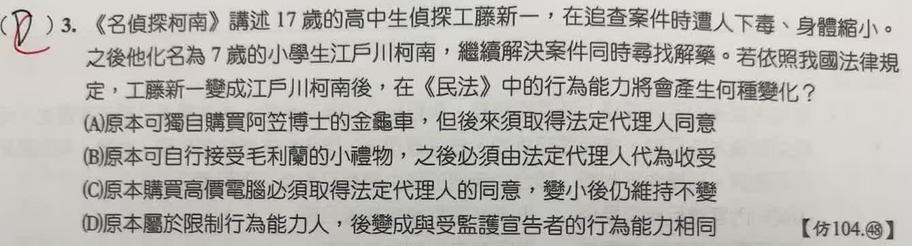

分享原卷｜第 3 題
完整原題
先想一想，再查看答案、解說與原圖
逐項解析
| 選項與原句 | 判讀 | 句意與判斷理由 |
|---|---|---|
| (A) 原本可獨自購買阿笠博士的金龜車，但後來須取得法定代理人同意 | 不選 | 購車不是題中一般日常生活必需，17歲與滿7歲均須法定代理人允許，A的前半句不成立。 |
| (B) 原本可自行接受毛利蘭的小禮物，之後必須由法定代理人代為收受 | 不選 | 未附帶義務的小禮物是純獲法律上利益；17歲與滿7歲均可自行有效接受，不需因此改由代理人代收。 |
| (C) 原本購買高價電腦必須取得法定代理人的同意，變小後仍維持不變 | 應選 | 兩個年齡都屬限制行為能力人，高價電腦交易仍須法定代理人允許；維持不變也是對題幹所問變化的有效回答。 |
| (D) 原本屬於限制行為能力人，後變成與受監護宣告者的行為能力相同 | 不選 | 受監護宣告者無行為能力；滿7歲的未成年人有限制行為能力，兩者不同。 |
詳細說明與解題步驟
一、本題的7歲按滿7歲理解
民法第13條以是否滿7歲區分行為能力。17歲與滿7歲都是未成年人，均屬限制行為能力人。因此，本題不能把7歲當成無行為能力人。
二、題幹問變化，也可以回答維持不變
題目是在詢問前後的法律狀態。回答「仍維持不變」也是對變化情形的有效回答，不能只因題幹出現「變化」就排除C。年齡變小，不代表行為能力的分類一定改變。
三、(A)購車並非日常生活所必需
17歲及滿7歲均屬限制行為能力人，題中的買車行為都須法定代理人允許；A先說17歲原本能獨自購買，前提即不成立。
四、(B)純受贈不需改由代理人代收
本題的小禮物按未附帶義務、純獲法律上利益理解，屬民法第77條的例外。17歲及滿7歲都能自行有效接受，因此B所說變小後必須由法定代理人代收，並不正確。
五、(C)高價電腦交易的要件維持不變
購買高價電腦不是純獲法律上利益，也不是題目所指的一般日常生活必要行為。17歲時須得法定代理人允許，變為滿7歲後仍屬限制行為能力人，仍須允許，因此選C。
六、(D)與受監護宣告者不同
民法第15條規定受監護宣告者無行為能力；滿7歲則有限制行為能力，二者不能混同，所以D錯誤。
本題已依使用者確認，以滿7歲及「維持不變仍是有效回答」的前提完成核對。來源AI圖誤將7歲判成無行為能力人並選B，未採用該圖。
核對註記：使用者已確認答案C：7歲按滿7歲理解；維持不變亦能回答題幹所問的變化情形。題幹與選項保持原卷內容。
原圖（僅本題）
